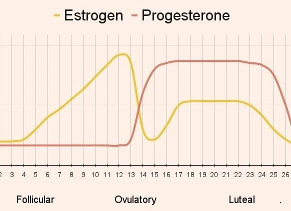

We often hear the phrase “hormones are out of balance,” but few women truly understand what that means — especially when it comes to estrogen.
Estrogen is a beautiful, God-designed hormone that supports so much of what makes a woman feel like herself: energy, curves, mood, skin, fertility, bone health, and cognition.
But too much estrogen in comparison to progesterone can throw everything out of rhythm.
This imbalance is called estrogen dominance — and it’s one of the most common hormonal concerns for women today.
The good news?
Your body was created to heal. With knowledge, nourishment, and intentional daily habits, you can bring your hormones back into harmony.
Let’s break this down clearly and compassionately — what estrogen dominance is, how it affects your body, and natural ways to restore balance.
What Is Estrogen Dominance?
Estrogen dominance occurs when estrogen is high relative to progesterone, not necessarily when estrogen is “too high” on its own.
You can have estrogen dominance in two ways:
- Estrogen is elevated while progesterone is normal or low
- Estrogen is normal, but progesterone is too low to balance it
Progesterone acts as estrogen’s calming counterpart — think balance, grounding, warmth. When estrogen levels exceed those of progesterone, symptoms typically begin to appear.
Common Symptoms of Estrogen Dominance
You might see yourself in these:
- Bloating & water retention
- PMS, mood swings, anxiety
- Heavy or painful periods
- Tender breasts
- Weight gain around hips & midsection
- Fatigue or trouble sleeping
- Migraines around cycle
- Worsening symptoms with age
- Hormonal acne (especially jawline + chin)
- Low libido
- Dense breast tissue
- Brain fog or irritability
You’re not alone if these sound familiar. Millions of women experience them — but normal does not mean healthy.
How Estrogen Dominance Affects Your Hormones + Health
1. It Intensifies PMS Symptoms
Research shows estrogen fluctuations are directly linked to increased PMS severity and mood imbalance when progesterone is low.
(*) Study: Hantsoo & Epperson, 2015 — estrogen fluctuations intensify premenstrual emotional symptoms.
2. It Slows Metabolism & Promotes Fat Storage
Estrogen influences fat distribution, and high levels can lead to more storage around the hips, thighs, and belly.
(*) Study: Mayes & Watson, 2004 — estrogen shifts lipid metabolism and alters fat deposition.
3. It Disrupts Gut Health
Estrogen is metabolized in the liver and excreted through the gastrointestinal tract. If elimination is slow → estrogen recirculates.
(*) Study: Fuhrman et al., 2010 — gut microbiota directly influence estrogen metabolism
4. It Affects Thyroid Function
When estrogen rises, thyroid-binding globulin increases, making thyroid hormone less available to cells.
(*) Study: Velázquez et al., 1997 — high estrogen can reduce free thyroid hormone availability
5. Raises Risk of Fibroids + Cysts Over Time
Elevated estrogen is associated with fibroids, endometriosis, and heavy bleeding in long-term imbalance.
(*) Study: Bulun et al., 2019 — estrogen drives fibroid growth and inflammatory response
This isn’t meant to scare you — but to empower you. Awareness is grace. It’s the first step to healing.
Root Causes of Estrogen Dominance
Many women assume their body is “just like this,” but estrogen dominance rarely happens without cause.
Here are the biggest drivers:
- A sluggish liver unable to detox excess estrogen
- Gut imbalances or constipation
- Chronic stress → low progesterone
- Poor sleep quality
- Blood sugar instability
- Exposure to xenoestrogens (plastics, fragrance, skincare chemicals)
- Birth control history
- High alcohol intake
- Nutrient deficiencies (magnesium, B vitamins, zinc)
Your body isn’t failing — it’s communicating.
Heal Estrogen Dominance Naturally
Healing is possible, and it begins with partnering with your body instead of suppressing symptoms.
Here are actionable ways to restore balance:
1. Support Your Liver (This Is Key)
The liver breaks down estrogen so it can be removed. If detox pathways are sluggish, estrogen builds up.
Support with:
- Daily cruciferous vegetables (broccoli, cabbage, brussels sprouts)
- Milk thistle or dandelion root
- Hydration + minerals
- Bitter greens before meals
- Alcohol reduction
Research shows cruciferous vegetables contain DIM + sulforaphane, compounds that support estrogen metabolism and clearance.
(*) Zhang, 2015 — sulforaphane enhances detoxification of estrogen metabolites
2. Heal the Gut + Improve Elimination
Estrogen exits the body through the gut — so daily bowel movements are essential.
Support with:
- Fiber from fruits + vegetables
- Chia + flax seeds
- Probiotics (Lactobacillus & Bifidobacterium strains)
- Olive oil + magnesium for motility
- Reduce inflammatory foods temporarily
If you’re not eliminating, you’re recycling hormones.
3. Balance Blood Sugar
Blood sugar rollercoasters increase cortisol → deplete progesterone → fuel estrogen dominance.
Balance with:
- Protein-rich meals (30g per meal goal)
- Slow carbs (sweet potato, quinoa, berries)
- Fats for satiety (avocado, salmon, olive oil)
- Eat within 30–60 min of waking
- Don’t skip meals if hormonally stressed
Stable blood sugar = stable hormones.
4. Reduce Xenoestrogen Exposure (Toxin Load)
Xenoestrogens mimic estrogen in the body.
Reduce exposure from:
- Plastic containers
- Non-stick cookware
- Scented candles & fragrance
- Conventional beauty products
- BPA + phthalates
Clean beauty isn’t a trend — it’s protective.
5. Nourish Progesterone Naturally
Progesterone is your calming, grounding hormone. To increase it:
- Reduce stress + cortisol load
- Increase magnesium, vitamin B6, and zinc
- Seed cycling
- Quality sleep
- Gentle exercise, walking, and pilates
- Omega-3s to lower inflammation
Progesterone rises when your nervous system feels safe.
The Faith & Mindset Connection
Your hormones aren’t enemies — they’re messengers. God designed your body with incredible wisdom and self-correction. Imbalance is not punishment; it’s information.
Instead of thinking,
“My hormones hate me,”
try shifting to,
“My body is asking for support — and I will listen.”
Healing begins with compassion, not frustration. Patience, grace, and faith create fertile ground for transformation.
You are not behind. You are not broken. You are becoming.
Estrogen dominance is common — but not permanent. Through nourishment, detox support, gut health, stress reduction, toxin removal, and restoring progesterone, your body can return to harmony.
You deserve to feel balanced, vibrant, energized, and at home in your body.
Book your FREE Wellness Transformation call to start balancing your hormones!